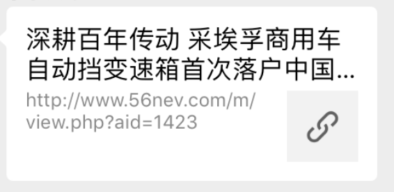
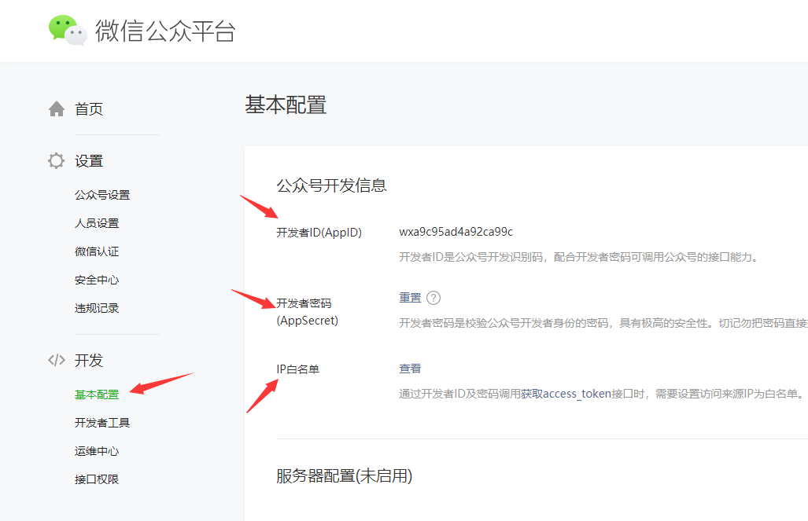
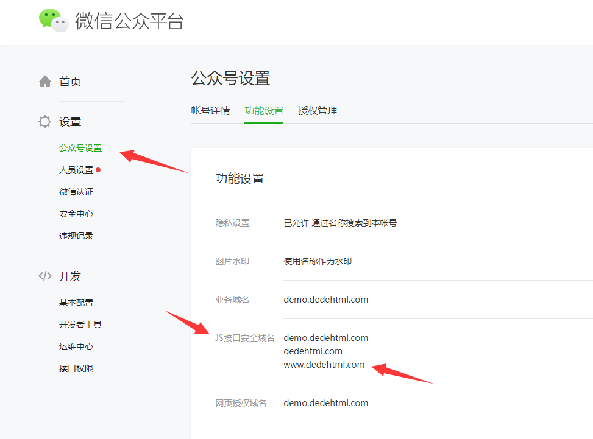
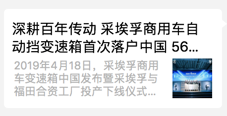

dedecms V5.7二次开发
php5.6
mysql5.1
问题：dedecms文章分享到微信，带缩略图与简介。如下图：

1.准备工作
2.具体步骤
（1）登录微信公众号平台，查看AppId，AppSecret、IP白名单(填你服务器外网IP)、绑定域名


注：1>基本配置->同意成为开发者->开发者密码启用之后才可能设置ip白名单；
2>添加js接口安全域名，会提示你需要做什么，要步骤完成即可；
（2）文章内容页面微信分享代码：
1 <script src="https://res.wx.qq.com/open/js/jweixin-1.4.0.js"></script>
2 <script type="text/javascript">
3 var url = encodeURIComponent(location.href.split("#")[0]);
4 $.ajax({
5 type: "get",
6 url: "https://www.dedehtml.com/wechat.php?link=" + url,
7 //url的域名根据自己的实际情况修改,eg.
8 //url:"http://www.56nev.com/wechat.php?link="+url,
9 dataType: "json",
10 contentType: "application/json; charset=utf-8",
11 success: function(e) {
12 var d = e.appid,
13 i = e.timestamp,
14 t = e.noncestr,
15 n = e.signature;
16 wx.config({
17 debug: 0,//如果分享失败，把0改成1开启错误提示看看
18 appId: d,
19 timestamp: i,
20 nonceStr: t,
21 signature: n,
22 jsApiList: ["onMenuShareTimeline", "onMenuShareAppMessage"]
23 }),
24 wx.ready(function() {
25 wx.onMenuShareTimeline({
26 title: "{dede:field.title/}",
27 desc: "{dede:field.description/}",
28 link: "{dede:global.cfg_basehost/}{dede:field.id runphp='yes'}$result=GetOneArchive(@me);@me=$result['arcurl'];{/dede:field.id}",
29 imgUrl: "{dede:global.cfg_basehost/}{dede:field.litpic/}"
30 }),
31 wx.onMenuShareAppMessage({
32 title: "{dede:field.title/}",
33 desc: "{dede:field.description/}",
34 link: "{dede:global.cfg_basehost/}{dede:field.id runphp='yes'}$result=GetOneArchive(@me);@me=$result['arcurl'];{/dede:field.id}",
35 imgUrl: "{dede:global.cfg_basehost/}{dede:field.litpic/}"
36 })
37 })
38 }
39 });
40 </script>（3）wechat.php文件下载，放在网站根目录
https://pan.baidu.com/s/1FQejrLWYpY5rOwWLe0xg6A
（4）其他需要注意的地方：
1>不同内容页链接方式写法不一样
1、如果你是手机站内容页，这样的 http://www.dedehtml.com/m/view.php?aid=123
那你应该改成
link: "{dede:global.cfg_basehost/}{dede:field.id/}",
2、如果你是手机站内容页，这样的 http://m.dedehtml.com/view.php?aid=123
那你应该改成
link: "http://m.dedehtml.com/view.php?aid={dede:field.id/}",
3、如果你是手机站内容页，这样的 http://www.dedehtml.com/m/news/123.html
那你应该改成
link: "{dede:global.cfg_basehost/}/m/{dede:field.id runphp='yes'}$result=GetOneArchive(@me);@me=$result['arcurl'];{/dede:field.id}",
4、如果你是手机站内容页，这样的 http://m.dedehtml.com/news/123.html
那你应该改成
link: "http://m.dedehtml.com{dede:field.id runphp='yes'}$result=GetOneArchive(@me);@me=$result['arcurl'];{/dede:field.id}",操作完成之后，分享显示的是：

因为项目有这样的需求，上百度搜到的。记录一下，学习。原文链接↓↓↓
原文链接：https://www.dedehtml.com/notes/dede-weixinshare.html